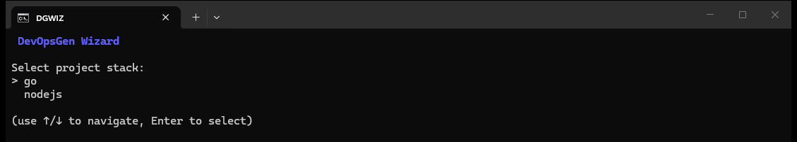
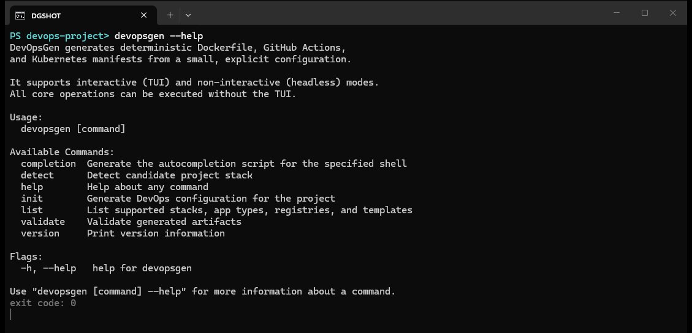
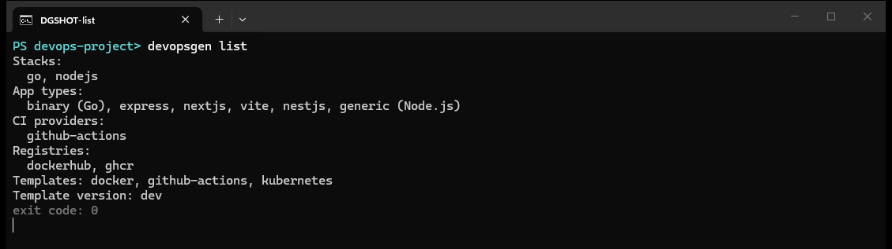
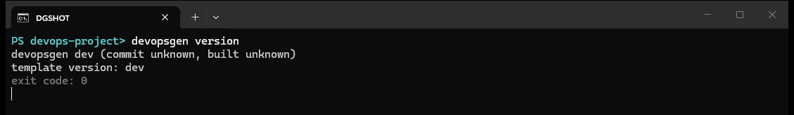

docker · github actions · kubernetes
DevOps scaffolding,
deterministically.
DevOpsGen reads your Go or Node.js project and writes a complete, opinionated DevOps baseline: hardened Dockerfile, GitHub Actions pipeline and ready-to-apply Kubernetes manifests — with dry-run plans, automatic backups and config validation built in.

Why DevOpsGen
Deterministic
Same inputs, same bytes — every run. Machine-friendly for code review: a second generation with --force produces bit-identical files.
Safe by default
Existing files are never overwritten without --force. Overwrites get .bak backups, failed runs roll back automatically, and --dry-run prints the full plan first.
Validated output
Built-in validation checks Dockerfile structure, GitHub Actions workflow wiring and Kubernetes manifests (selector consistency, port ranges, Ingress paths) before anything ships.
Stack aware
Detects Go and Node.js projects (npm, pnpm, Express, Next.js, Vite, NestJS) from go.mod / package.json and tailors templates accordingly.
Everything a project needs on day one
One init command writes the whole baseline tree. Preview the real terminal output of every command below — all screenshots are live captures, not mockups.
$ devopsgen init --stack go --ci github-actions --registry ghcr --image you/myapp --port 8080
created 5 file(s), replaced 0 file(s) in .
exit code: 0


What gets generated
| Template set | Files | Purpose |
|---|---|---|
docker (+ .dockerignore) | Dockerfile | Hardened multi-stage build (Go runs as USER 1000:1000 on a scratch base). For Node.js, RUN steps and install/prune commands follow the detected package manager (npm / pnpm) and lockfile. The generated .dockerignore keeps state, tool caches and env files out of the image. |
github-actions | .github/workflows/ci.yml | Runs your tests when a test command is configured, then builds and pushes the image with both the commit SHA tag and your alias tag, authenticating to the chosen registry via secrets. |
kubernetes | deployment.yaml, service.yaml, optional ingress.yaml | DNS 1035-safe resource names, container port wiring, resource requests and limits, health probes when --health-path is given, and an optional host-based Ingress (RFC 1123 hostname). |
Explore the docs
getting started
Install DevOpsGen via go install or a release binary, then generate a complete Docker, CI and Kubernetes setup for your project with a single command.
wizard
DevOpsGen launches an interactive TUI wizard that walks through stack detection, ports, container images and Kubernetes options, then writes the generated configuration.
init
Full reference for devopsgen init flags: stack, app type, CI provider, registry, image, port, Kubernetes ingress, health path, dry-run and force overwrite behaviour.
detect
devopsgen detect inspects the current project and reports the programming stack, the files it based its decision on, and candidate application types.
validate
devopsgen validate statically checks generated Dockerfiles, GitHub Actions workflows and Kubernetes manifests: FROM digests, action pinning, naming rules, probes and more.
exit codes
Every devopsgen command exits with a documented status code: 0 success, 1 general error, 2 invalid configuration, 3 file conflicts, 4 validation failure, 5 ambiguous detection.
Command cheatsheet


